01影像
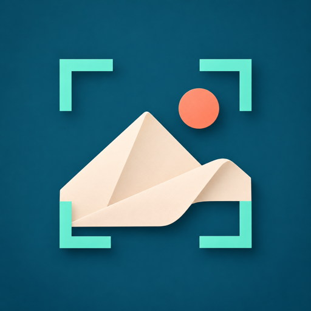
Pixrune
造隅修图
PhotoCraft
com.richerfu.pixrune图像编辑、图层与基础修图
16 款创作应用，加上 AI 工作室与套件入口，共 18 款新名称与独立图标。
单词式英文品牌名、象牙白折面与功能轮廓，面向鸿蒙平板与 2in1 的名称与视觉资源。设计目录涵盖已接入和待接入应用，接入状态以工程配置为准。

造隅修图
PhotoCraft
com.richerfu.pixrune图像编辑、图层与基础修图
造隅矢绘
VectorCraft
com.richerfu.vecrune矢量绘图与插画
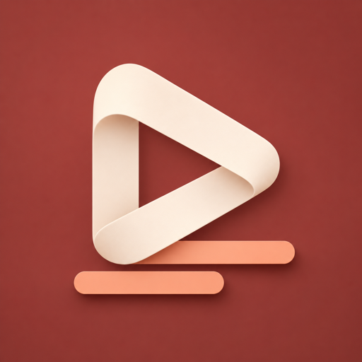
造隅剪辑
FilmCraft
com.richerfu.cliprune视频剪辑与时间线编辑
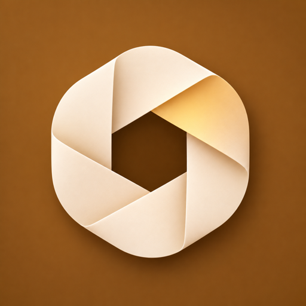
造隅光影
LightCraft
com.richerfu.lutrune照片管理与 RAW 调色
造隅阅编
PdfCraft
com.richerfu.pagrunePDF 阅读、整理与编辑
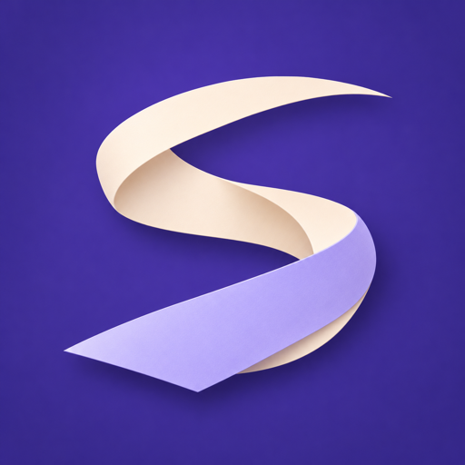
造隅动效
EffectCraft
com.richerfu.motrune动态图形与视觉特效
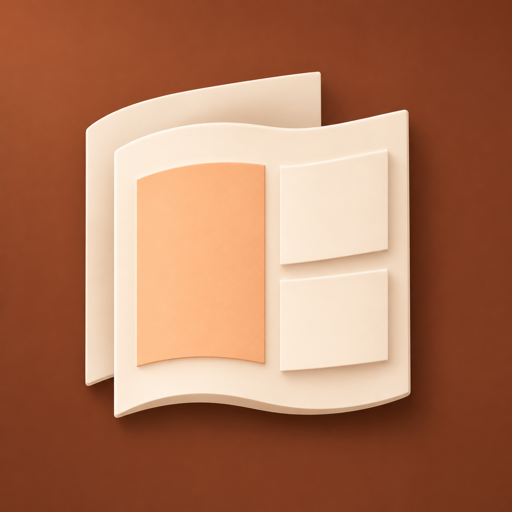
造隅版式
DesignCraft
com.richerfu.layrune页面排版与出版设计
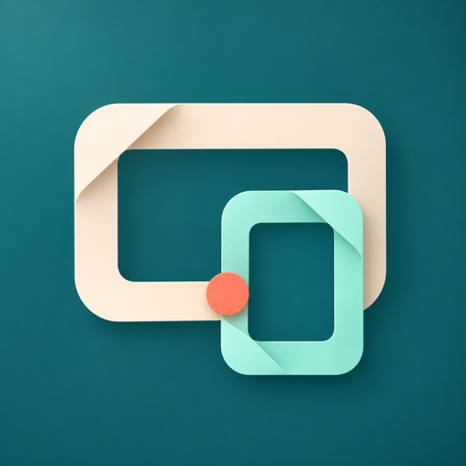
造隅界面
FigCraft
com.richerfu.framune界面设计与交互原型
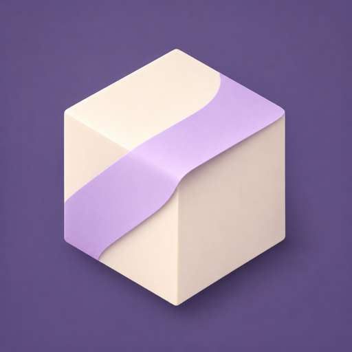
造隅纹绘
TextureCraft
com.richerfu.texune三维模型纹理绘制
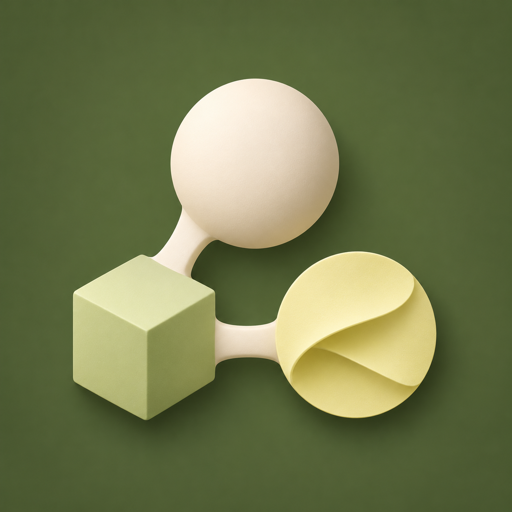
造隅材质
MaterialCraft
com.richerfu.shadrune节点式程序化材质制作
造隅文档
WordCraft
com.richerfu.quilrune文档写作与文字处理
造隅音轨
SoundCraft
com.richerfu.sonune录音、音频编辑与混音
造隅演示
DeckCraft
com.richerfu.deckune幻灯片制作与演示
造隅工图
CADCraft
com.richerfu.dimrune计算机辅助制图
造隅表格
GridCraft
com.richerfu.gridrune电子表格与数据分析
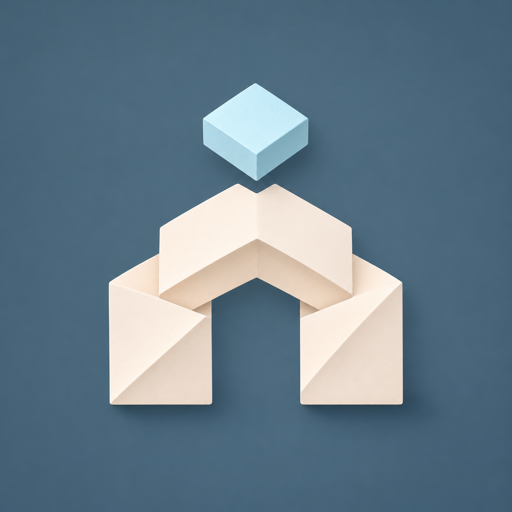
造隅构建
Craft Anything
com.richerfu.modune软件探索与应用构建
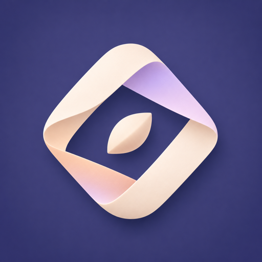
造隅灵绘
ArtCraft Studio
com.richerfu.visruneAI 图像与视频创作
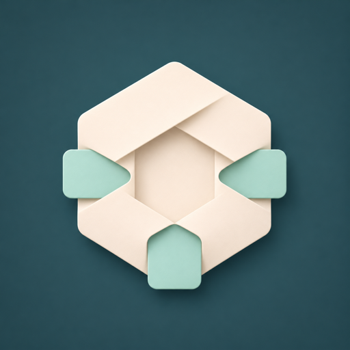
造隅工坊
ArtCraft Launcher
com.richerfu.nodune应用管理与套件入口
没有匹配的应用。